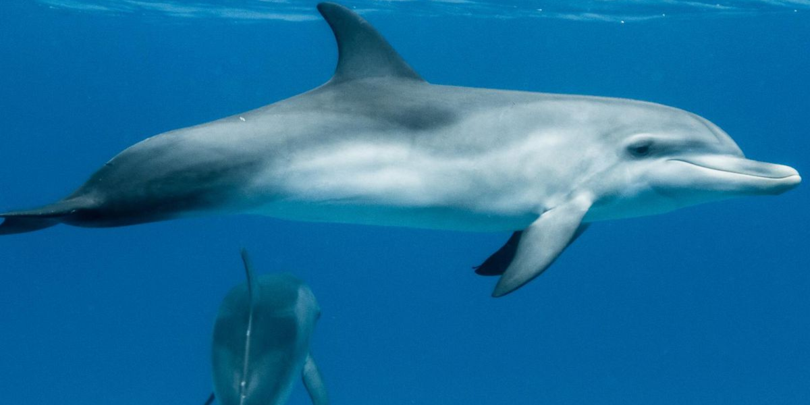
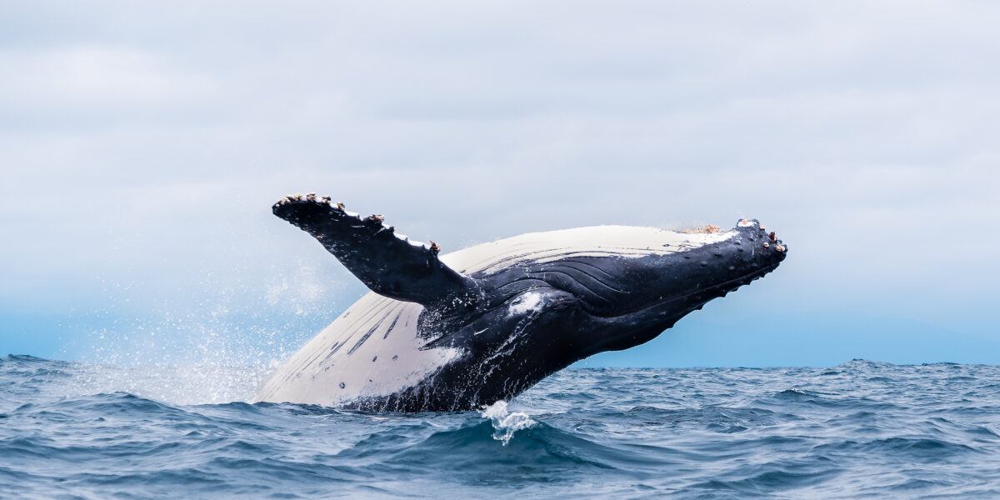

Marine mammals are a fascinating group of animals that have adapted to life in the ocean. Unlike fish, they are warm-blooded, give birth to live young, and need to surface to breathe air. This group includes species such as whales, dolphins, and seals, each with unique characteristics that allow them to thrive in their marine environments.One of the key adaptations of marine mammals is their ability to regulate body temperature. Many of them, like whales and seals, have a thick layer of blubber that provides insulation against cold water. Additionally, they have evolved specialized lungs and circulatory systems to allow for deep and prolonged dives underwater.Marine mammals play an essential role in the ocean's ecosystem. They help maintain the balance of marine life by controlling fish populations and influencing the food chain. However, these animals face numerous threats from human activities, including pollution, habitat destruction, and climate change. Conservation efforts are necessary to protect their populations and ensure that they continue to thrive in the wild.By studying marine mammals, scientists can learn more about the health of our oceans. Their behaviors, migration patterns, and communication methods provide valuable insights into marine ecosystems. Public awareness and conservation efforts are crucial in preserving these incredible creatures for future generations.
 Dolphins  Whales